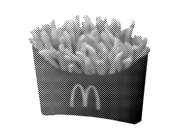
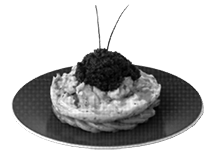
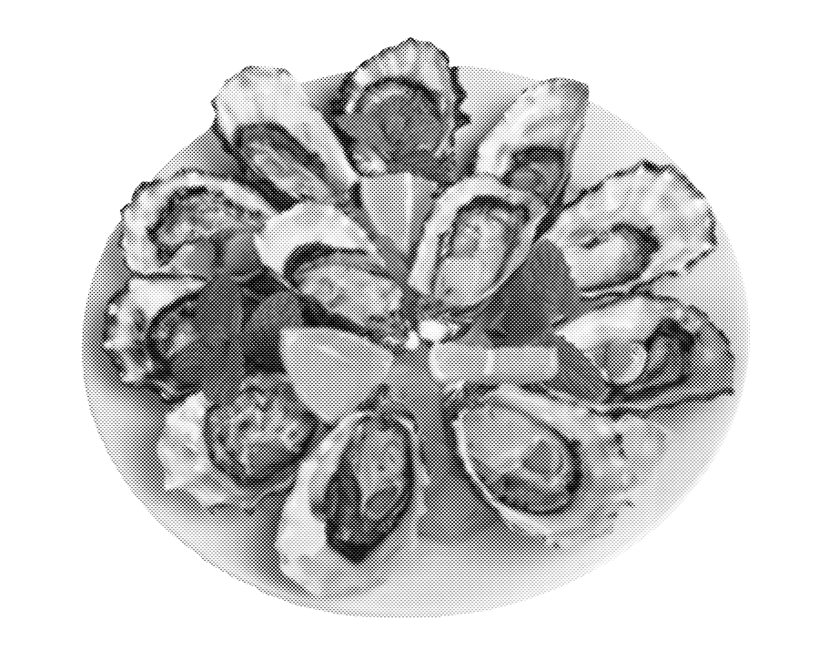
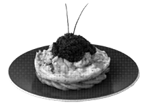
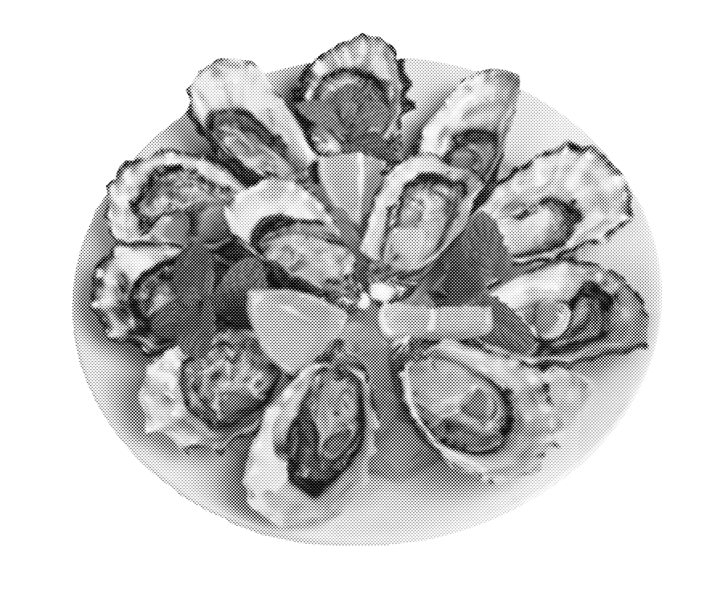

✦appetizers✦
According to Dr. Kelly Brownell, director of the Center for Eating and Weight Disorders at Yale University, children see an average of 10,000 food advertisements a year, and most of those are for sweet cereals, fast food, candy and soft drinks.

✦entrees✦
Americans consume nearly 21,000 animals during their lifetime. It sounds like a lot because it is. Meat is actually an unnecessary component of the human diet and excessive meat consumption can lead to chronic illnesses like cardiovascular disease and cancer. Annual costs for nutrition related diseases in the U.S. exceed $33 billion.
 



✦desserts✦
The names we give desserts—"Death by Chocolate," "Praline Paradise," "Coconut Dream"—are enough to tempt even the strongest will. Added sweeteners comprise nearly 20% of the American diet.


✦drinks✦
While gluttony is commonly associated with the overconsumption of food, it can be used to described unnecessary indulgence in other aspects of life as well.

Gluttony transcends eating and relates to material goods and other physical pleasures. “-Aholic” is the suffix attached to the glutton’s “meal” of choice.